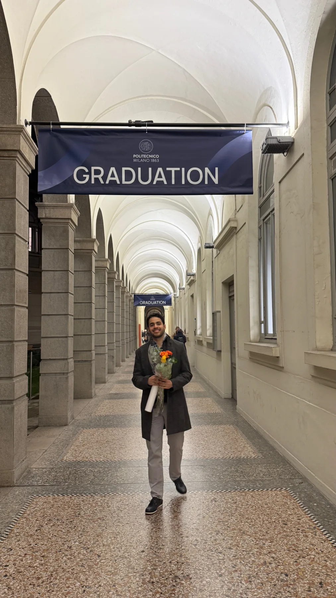

Software engineer drawn to creative technology, games, and polished digital products.
Current focus
Building production web products while continuing to explore games, interaction, and more expressive digital experiences.
How I work
Detail-oriented, disciplined, and focused on making the final result feel refined, coherent, and complete.
Profile
Art, nature, and attention to detail shape the way I see and build digital work.

Recent milestone
Master’s degree completed in Milan.
Politecnico di Milano, with work spanning web systems, human-computer interaction, mobile applications, AI, and game development.
About
I bring full-stack execution with a strong eye for product quality and interface feel.
In practice, that means moving comfortably between frontend implementation, backend services, deployment, and product decisions. I like taking responsibility for how a product works end to end, while still caring about the visual system, interaction quality, and overall sense of finish.
Experience
A progression from frontend-focused roles into full-stack product ownership and delivery.
My recent work spans implementation, backend services, deployment, and product infrastructure, with earlier roles building the foundation in frontend engineering, Django applications, and practical product development.
•
Education
Education, teaching work, and technical foundation.
Academic experience
Contact
Email for opportunities, LinkedIn for context, GitHub for the code trail.
If you are building something around data-heavy products, modern web engineering, or interactive user experiences, I am open to the conversation.